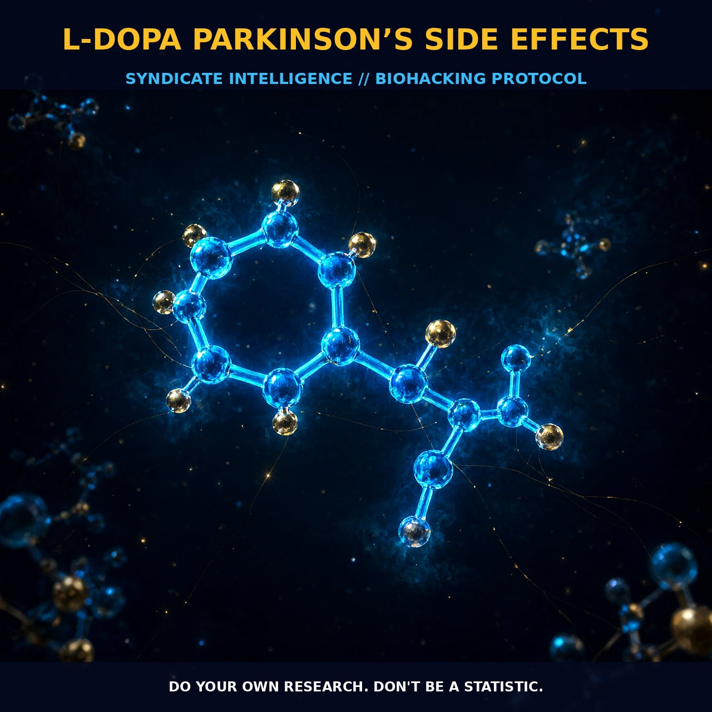

The Neurochemical Dynamics of L-DOPA in Parkinsons Disease

1. The Mechanism
L-DOPA, or L-3,4-dihydroxyphenylalanine, is a precursor to the neurotransmitter dopamine, which plays a critical role in the brain's reward and motivation systems, as well as motor control. Synthesized from the amino acid L-tyrosine, L-DOPA crosses the blood-brain barrier easily, making it a valuable nootropic for boosting dopamine levels.
The synthesis and regulation of L-DOPA involve several enzymatic steps, including the conversion of tyrosine to L-DOPA by tyrosine hydroxylase, and further to dopamine. This process is rate-limited, meaning that the efficiency of the initial steps significantly impacts the overall production of dopamine. Dopamine then modulates neurotransmission via dopamine receptors, primarily D1 and D2 receptors, influencing various brain functions.
L-DOPA is particularly important for individuals with Parkinson’s disease, as it helps compensate for the reduced dopamine levels characteristic of this condition. By boosting dopamine levels, L-DOPA can alleviate motor symptoms such as tremors and rigidity. However, excessive or prolonged use of L-DOPA can lead to dopamine dysregulation syndrome, a condition characterized by behavioral changes such as pathological gambling, hypersexuality, compulsive eating, and aggressiveness. This syndrome is also observed in individuals with schizophrenia and Parkinson’s disease who have taken high doses of L-DOPA over an extended period.
2. Biological Leverage
The biological leverage of L-DOPA lies in its ability to enhance dopamine levels and modulate dopamine signaling pathways. When taken as a supplement, L-DOPA is quickly absorbed and converted to dopamine in the brain, providing immediate neurochemical support. Dopamine, in turn, influences a variety of brain functions, including reward, motivation, mood, and motor control. By enhancing dopamine levels, L-DOPA can improve cognitive performance, mood, and motor function, making it a valuable tool for individuals seeking to optimize their brain function.
However, the effectiveness of L-DOPA can vary depending on individual metabolism and genetic factors. For example, variations in the CYP450 system in the liver can affect how L-DOPA is metabolized and absorbed. This individual variability means that some people may require higher doses of L-DOPA to achieve the desired effects, while others may experience side effects at lower doses. Additionally, the rate-limiting step in dopamine synthesis, the conversion of tyrosine to L-DOPA, can be influenced by factors such as nutritional status and genetic predisposition, further affecting the efficacy of L-DOPA supplementation.
3. Tactical Implementation
When implementing L-DOPA as a nootropic supplement, it is essential to consider the dosage and timing to achieve optimal results while minimizing the risk of side effects. Typically, L-DOPA is taken in low-to-moderate amounts, often in combination with carbidopa, which helps prevent the breakdown of L-DOPA before it reaches the brain. The recommended dosage range for L-DOPA supplementation varies, but generally starts around 250 mg to 1,000 mg per day, divided into several doses.
It is crucial to monitor the response and adjust the dosage as needed, paying attention to any signs of dopamine dysregulation syndrome. Timing is also critical, as the effects of L-DOPA can be influenced by factors such as meal timing and the presence of other nutrients. Taking L-DOPA on an empty stomach may enhance its absorption, but this can also increase the risk of gastrointestinal side effects. Combining L-DOPA with a balanced meal containing protein and carbohydrates can help stabilize its absorption and prolong its effects.
Stacking L-DOPA with other nootropics like choline sources (e.g., citicoline or alpha-GPC) can support the synthesis of acetylcholine, which works synergistically with dopamine to enhance cognitive performance. It is important to note that individual responses to L-DOPA can vary significantly, and it is advisable to start with low doses and gradually increase as needed. Monitoring for signs of dyskinesia, such as involuntary movements, and adjusting the dosage accordingly can help optimize the therapeutic window.
Prostar Life Hack
Start with low doses of L-DOPA and gradually increase as needed, paying close attention to any signs of dopamine dysregulation syndrome such as involuntary movements and behavioral changes.
[ AUTHOR: LEAD TECHNICAL RESEARCHER ]